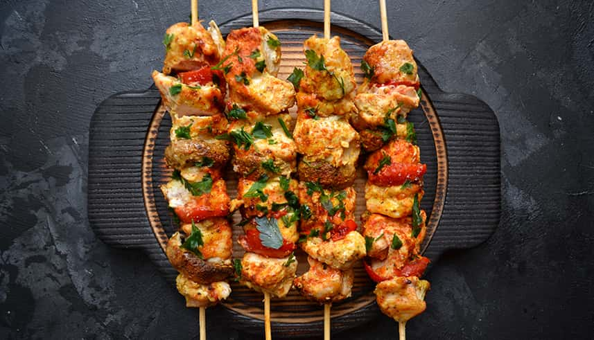

Our Story
We believe that barbeque cuisine is distinctively attractive as compared with other dining options due to its DIY and cooked-at-the-table nature and the flexibility and fun of mixing and matching a wide variety of meats, vegetables, sauces and condiments to create dishes according to each diner’s individual tastes and preferences. In addition, fixed price dining is very popular amongst relatively larger groups, due to customers’ perception of value for money and the comfort of certainty over the bill amount irrespective of varying individual appetites and consumption.
Our Central Grill & BBQ Restaurants typically offer customers at least five vegetarian and five non-vegetarian largely pre-cooked appetisers they can season and barbeque on a grill embedded in their table, an all-you-can-eat main course buffet and a selection of desserts.Our core values prioritise being customer-focused to provide excellent products and service and employee-focused by maintaining a superior quality work environment. Our Company was ranked 13th among best companies to work for in India across all categories by Economic Times “Great Places to Work” survey for 2020 conducted by Great Places to Work Institute. Our Company was also voted among the top ten employers within the Indian retail industry for 2020 by Great Places to Work and 14th among best large workplaces in Asia by Great Places to Work Institute.